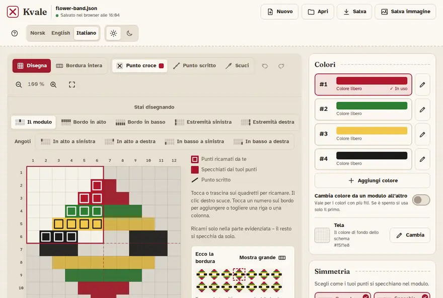
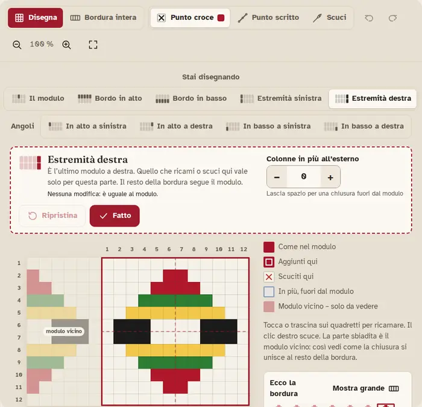
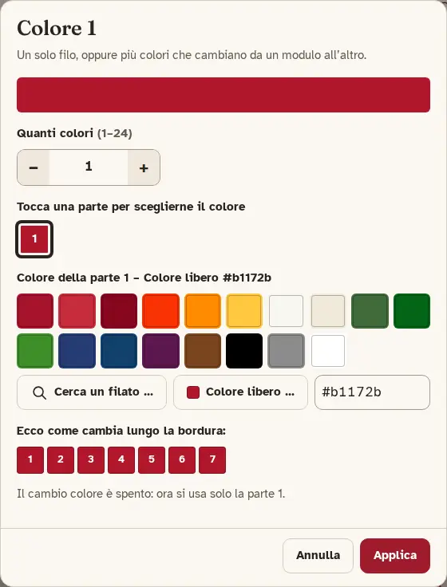
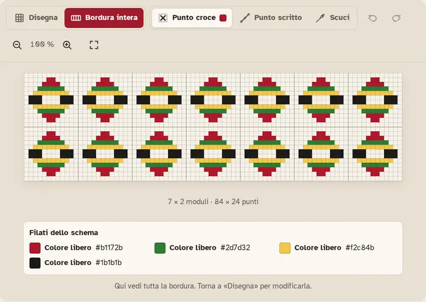

Come si usa Kvale
Kvale ti aiuta a disegnare bordure a punto croce per il bunad. Tu ricami una piccola parte, e Kvale la specchia e la ripete fino a formare tutta la bordura.
Per cominciare
Kvale funziona nel browser. La prima volta ci vuole qualche secondo perché sia pronto; poi sarà più veloce.
- Al centro c’è il modulo: il riquadro in cui disegni. Si ripete lungo la bordura.
- A destra ci sono Colori, Simmetria e Modulo e misure.
- In alto ci sono Nuovo, Apri, Salva, Salva con nome… e Salva immagine, la lingua, l’aspetto chiaro o scuro, e Aiuto (?), che apre questa guida.
- Disegna e Bordura intera passano dal disegno alla bordura finita.

Disegnare nella parte evidenziata
Scegli Punto croce e un colore, poi tocca o trascina sui quadretti per ricamare.
- Quando una simmetria è attiva, una parte del modulo è evidenziata. Ricami solo lì – il resto si specchia da solo.
- I punti ricamati da te hanno una cornice. I punti specchiati dai tuoi sono pieni.
- Per togliere dei punti scegli Scuci e toccali. Col mouse puoi anche usare il clic destro.
- Annulla e Ripeti sono le frecce curve (Ctrl+Z e Ctrl+Y).
- Ingrandisci e riduci con le lenti. Adatta mostra tutto lo schema sullo schermo.
La piccola bordura sotto la legenda ti mostra come sarà la bordura mentre disegni.
Simmetria
In Simmetria scegli come i tuoi punti si specchiano nel modulo. Puoi attivarne più d’una: lavorano insieme.
- Come lo ricami è sempre attivo.
- Specchia destra–sinistra e Specchia sopra–sotto copiano i tuoi punti dall’altra parte.
- Ruota di 180° li gira attorno al centro.
- Ruota di 90°, Ruota di 270° e gli specchi in diagonale richiedono un modulo quadrato. Se il modulo non è quadrato, Kvale ti offre un pulsante per renderlo tale.
In Dove i moduli si toccano (dentro Modulo e misure) scegli se una riga o colonna esterna si ricama in ogni modulo o se due moduli vicini la condividono.
Estremità e angoli
Spesso una bordura ha una chiusura diversa alle estremità. Scegli la parte nella barra Stai disegnando (Estremità sinistra, Estremità destra, Bordo in alto, Bordo in basso) oppure toccala nella piccola bordura.
- Quello che ricami o scuci lì vale solo per quella parte. Il resto della bordura segue il modulo.
- La parte sbiadita è il modulo vicino: così vedi come la chiusura si unisce al resto della bordura.
- Colonne in più all’esterno o Righe in più all’esterno lasciano spazio per una chiusura fuori dal modulo.
- Fatto ti riporta al modulo. Ripristina toglie tutte le modifiche di quella parte – te lo chiede prima, e puoi annullare dopo.

Angoli
Dove due parti si incontrano c’è un angolo (In alto a sinistra, In alto a destra, In basso a sinistra, In basso a destra). L’angolo parte da come lo fanno le due parti vicine, poi puoi dargli una chiusura diversa. La sua misura segue le righe e le colonne in più delle due parti accanto.
Punto scritto
- Scegli Punto scritto.
- Tocca l’angolo di un quadretto per cominciare, poi l’angolo successivo per ricamare una linea.
- La linea riparte dall’ultimo punto, così puoi ricamare più linee una dopo l’altra.
- Per fermarti: premi Esc, tocca di nuovo l’ultimo punto, oppure scegli un altro punto.
Per togliere una linea scegli Scuci e toccala. Il punto scritto si specchia come il punto croce, e puoi usarlo anche nelle estremità e negli angoli.
Colori e filati DMC
In Colori tocca un colore per ricamare con quello (oppure premi 1–9). La matita apre il colore per modificarlo. Aggiungi colore ne aggiunge uno nuovo.
- Cerca un filato … ti fa cercare i filati DMC per numero o nome, per esempio 321. Il filato si vede sempre con la sua marca, come «DMC 321».
- Colore libero … ti fa scegliere qualsiasi colore.
- I colori sullo schermo sono indicativi. Controlla su una cartella colori quando la tinta deve essere esatta.
Colori che cambiano da un modulo all’altro
Un colore può avere più fili che si alternano lungo la bordura. Aumenta Quanti colori e tocca ogni parte per sceglierne il colore. Attiva Cambia colore da un modulo all’altro per usarli; se è spento, si usa solo il primo.

Tela è il colore di fondo dello schema.
Righe e colonne
- Tocca un numero sul bordo della griglia per aggiungere una riga o una colonna accanto, o per toglierla.
- Oppure usa Aggiungi o togli righe/colonne … in Modulo e misure.
- Con una simmetria attiva, Kvale può cambiarne più di una, così il motivo resta uguale. Te lo dice prima che tu confermi.
- Larghezza e Altezza danno la misura del modulo; Quanti moduli dice quante volte si ripete in larghezza e in altezza.
Salvare, aprire e immagini
- Salva scarica lo schema come file (.json), da conservare e riaprire in seguito (Ctrl+S).
- Salva con nome… salva una copia con un nuovo nome (Ctrl+Shift+S).
- Apri apre un file così (Ctrl+O).
- Nuovo inizia un nuovo schema. Se ci sono modifiche non salvate in un file, Kvale te lo chiede prima.
- Salva immagine scarica tutta la bordura come immagine (PNG), con punto scritto, estremità e l’elenco dei filati.

Si salva da solo
Il lavoro si salva da solo qui nel browser, e lo schema si riapre la prossima volta che torni. In alto vedi quando è stato salvato l’ultima volta.
La copia nel browser esiste solo in questo browser su questo dispositivo, e sparisce se cancelli i dati del browser. Premi Salva per avere un file da conservare.
Installare e usare senza rete
Dopo la prima visita Kvale funziona anche senza internet: tutto ciò che gli serve resta nel browser. Puoi installarlo, così si apre come un’app:
- Chrome o Edge (computer o Android): premi Installa l’app in alto, oppure usa l’icona di installazione nella barra degli indirizzi o nel menu.
- iPhone e iPad (Safari): tocca Condividi, poi «Aggiungi alla schermata Home».
- Safari su Mac: File → «Aggiungi al Dock».
Quando è pronta una nuova versione di Kvale, compare un messaggio. Premi Ricarica per usarla; il tuo lavoro resta.